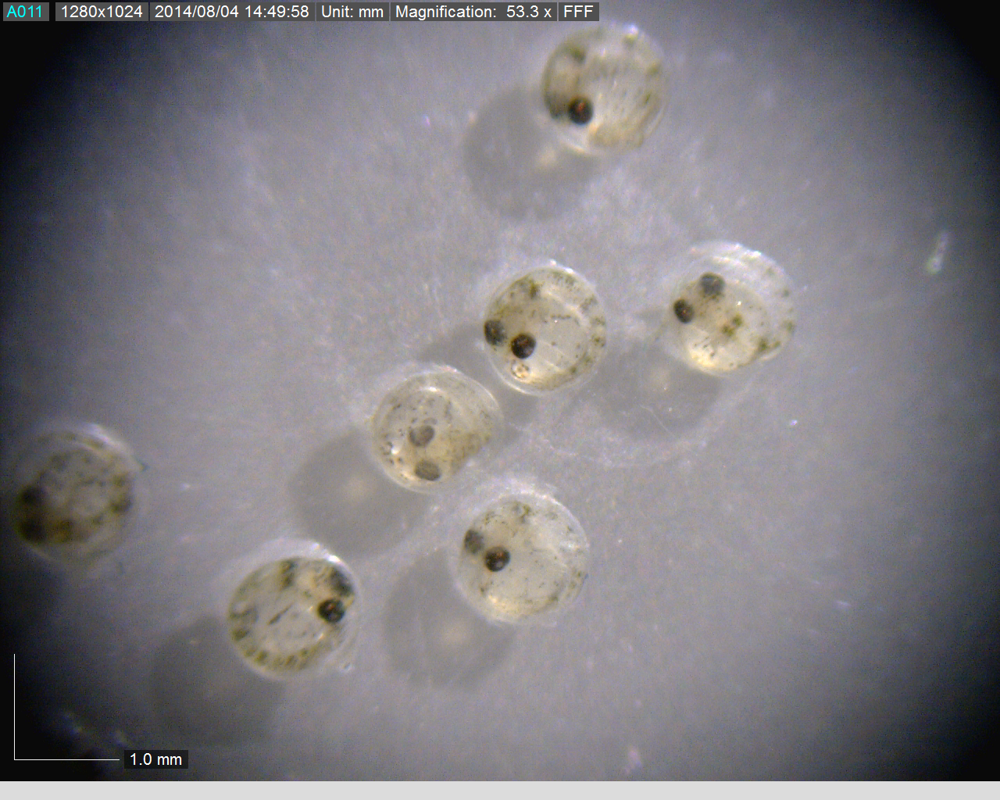
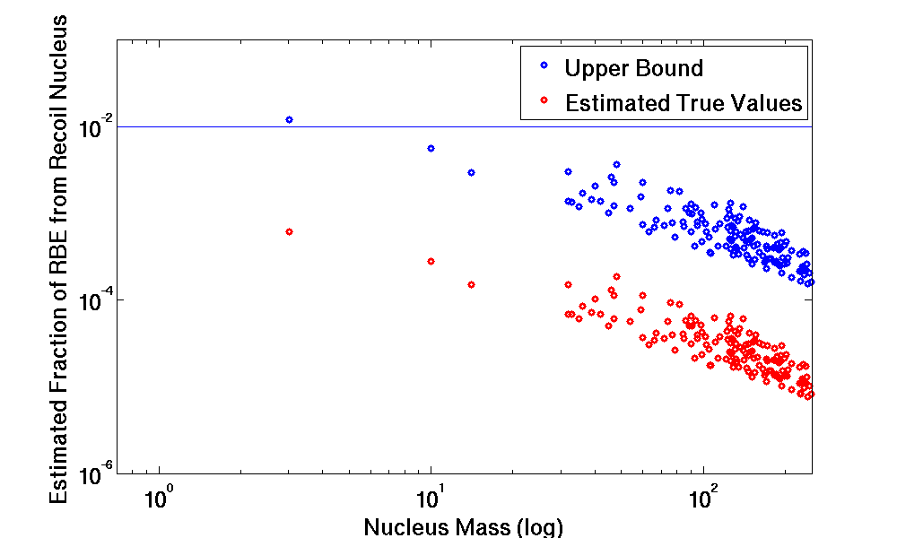

Radiation Biology
Effects of Gamma Radiation to American Flagfish
M. Tzivaki

With
growing interest in environmental protection, the need has risen
to investigate the effects of radiation and the resulting
radiation damage to components of the natural environment. In
the past the assumption was made, that "if man is adequately
protected, then other living things, are also likely to be
protected". There is a great research need to gather data about
the reference animals and plants as well as identifying related
research organisms which are selected based on practicability
considerations and their suitability for research. Model
organisms are used to decouple the system to be studied from its
environment in order to isolate the effects of radiation and
observe specific reference and benchmark values of radiation
effects.
American Flagfish are currently investigated as to their suitability to be a model organism in radiobiology studies. For that purpose the response of American Flagfish to gamma radiation and X-rays is studied.
 |
Poster |
Modelling Radiation Damage Due to Low Energy Electrons
M. Magill
Microdosimetry is the study of how radiation interacts with biological systems at the cellular level. This project is aimed at using modern computational techniques to model these biophysical processes in detail. All forms of ionizing radiation eventually interact with biological systems through moderate-energy electrons (with about 1 keV of kinetic energy, or less). However, recent work has demonstrated that these particles behave quantum-mechanically in water. We are working on developing the first microdosimetry simulation program to model that interaction. We will then use molecular dynamic simulation techniques to follow the propagation of energy within a cell. In particular, we are interested in studying the ionization of DNA molecules, which can lead to mutations and cancer formation